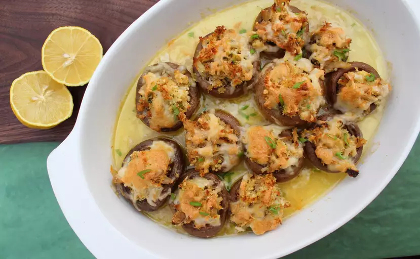

Champiñones Rellenos De Cangrejo
Estas pequeñas delicias son el complemento perfecto para su próxima reunión navideña o incluso el aperitivo perfecto para servir antes de una acogedora cena en casa. Todos quedarán deslumbrados con cada delicioso bocado (¡no podrán quitarles las manos de encima!). ¡Puedes sonreír mientras piensas en lo fácil que fue prepararlos juntos! Y la mejor parte: normalmente termino con el relleno sobrante, ¡que se congela maravillosamente hasta la próxima entrega!

Ingredientes
- 2 cucharadas de mantequilla
- 2 cucharadas de cebolla verde picada
- 1 taza de carne de cangrejo cocida, finamente picada
- ½ taza de pan rallado seco
- ¼ de taza de queso Monterey Jack rallado
- 1 huevo batido
- 1 cucharadita de jugo de limón
- ½ cucharadita de eneldo seco
- ½ taza de mantequilla, derretida
- 1 ½ libras de champiñones frescos, sin tallos
- ½ taza de queso Monterey Jack rallado
- ¼ de taza de vino blanco seco
Preparacion
- Precaliente el horno a 400 grados F (200 grados C).
- Derrita 2 cucharadas de mantequilla en una sartén; cocine y revuelva la cebolla verde hasta que se ablande, aproximadamente 2 minutos. Transfiera la cebolla verde a un tazón. Agregue la carne de cangrejo, el pan rallado, 1/4 taza de queso Monterey Jack, el huevo, el jugo de limón y el eneldo hasta que esté bien mezclado.
- Vierta 1/2 taza de mantequilla derretida en una fuente para hornear de 9x13 pulgadas; voltee las tapas de los champiñones en mantequilla para cubrirlos. Rellene las tapas de los champiñones con la mezcla de cangrejo y espolvoree con la 1/2 taza restante de queso Monterey Jack. Vierta el vino blanco en una fuente para hornear.
- Hornee en horno precalentado hasta que el queso se derrita y se dore ligeramente, de 15 a 20 minutos.
